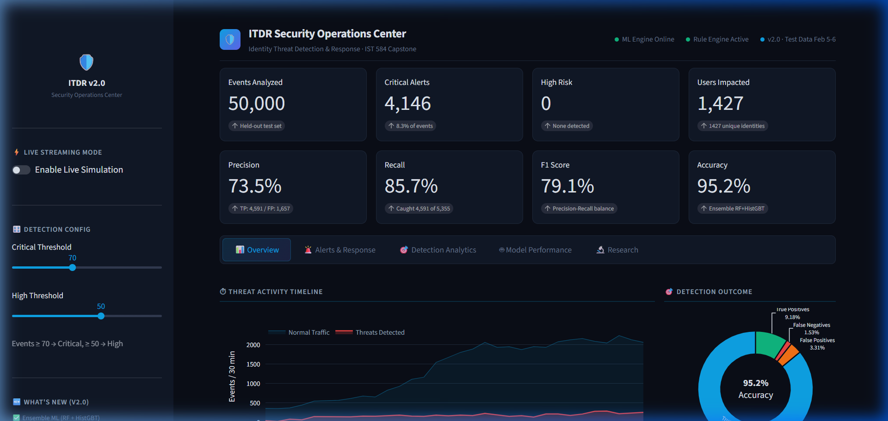
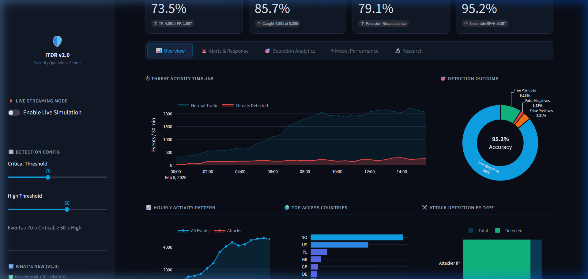
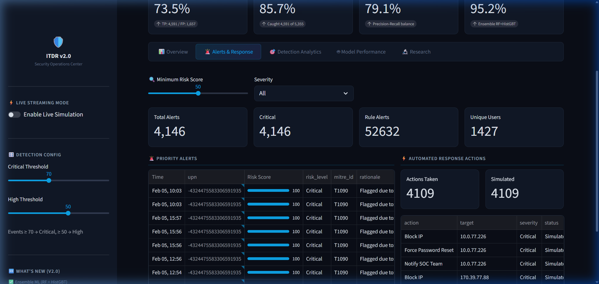
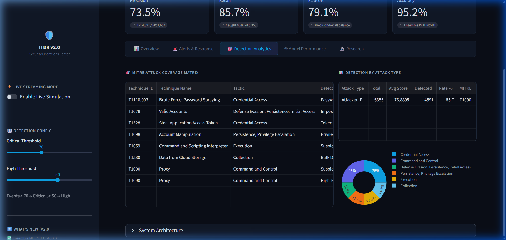
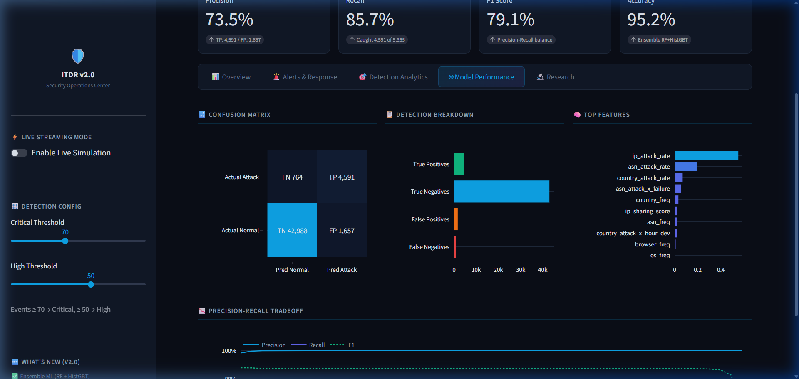
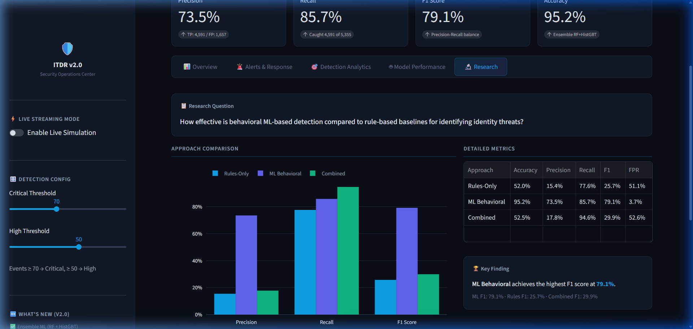

1
SOC Dashboard — Key Performance Metrics
📋 Completeness — All major detection, scoring, and response features are implemented and visible.

Full SOC dashboard header with 8 real-time KPI cards and 5-tab navigation
- 50,000 events analyzed from a held-out test set (Feb 5–6, 2020)
- 4,146 critical alerts flagged (8.3% of all events)
- 1,427 unique users impacted across the test window
- Precision 73.5% · Recall 85.7% · F1 79.1% · Accuracy 95.2%
- Ensemble classifier (Random Forest + HistGradientBoosting) with precision-targeted threshold
- ML Engine and Rule Engine status indicators confirm both subsystems are online
2
Threat Activity Timeline & Detection Outcome
📋 Functionality — Clear evidence the system processes data and produces meaningful visual outputs.

Overview tab: real-time threat timeline, detection donut, hourly patterns, geo-distribution, attack breakdown
- Threat Activity Timeline — stacked area chart showing normal traffic vs. detected threats over time
- Detection Outcome donut — TP/TN/FP/FN distribution with 95.2% accuracy center label
- Hourly Activity Pattern — reveals attack concentration during off-hours
- Top Access Countries — geographic distribution of authentication events (NO, US, PL, BR, etc.)
- Attack Detection by Type — overlay chart comparing total vs. detected attacks per category
- Sidebar controls: Live Streaming toggle, configurable Critical/High thresholds, version changelog
3
Alerts & Automated Response Engine
📋 AI & Security Integration — ML detection, MITRE mapping, and automated response work together end-to-end.

Alerts tab: priority alert queue with MITRE IDs, risk scores, and automated response playbook actions
- Priority Alerts table — sortable by time, user, risk score, severity, MITRE ID, and ML rationale
- Risk Score progress bars — visual 0–100 scoring with color-coded severity levels
- MITRE ATT&CK enrichment — each alert tagged with technique IDs (e.g., T1090, T1110.003)
- ML Explainability — per-alert rationale column explains why the ML model flagged each event
- 4,109 automated response actions simulated: Block IP, Force Password Reset, Notify SOC, etc.
- Severity-based playbooks — Critical alerts trigger account quarantine + session revocation
4
Detection Analytics & MITRE ATT&CK Coverage
📋 AI & Security Integration — Industry-standard MITRE ATT&CK taxonomy mapped to every detection rule.

Detection Analytics tab: MITRE ATT&CK coverage matrix, per-attack-type metrics, tactic distribution
- MITRE ATT&CK Coverage Matrix — 8 techniques mapped across 6 tactics
- Techniques covered: T1110.003 (Password Spraying), T1078 (Valid Accounts), T1528 (Token Theft), T1098 (Account Manipulation), T1059 (Scripting), T1530 (Cloud Storage), T1090 (Proxy)
- Detection by Attack Type — Attacker IP: 5,355 total, 4,591 detected (85.7% rate)
- Tactic Distribution pie chart — Credential Access 25%, Command and Control 25%, Defense Evasion 25%, etc.
- System Architecture expandable — shows full ETL → Feature Engine → ML Ensemble → Risk Scoring → Alert → Response pipeline
- 7 rule-based detections complementing the ML ensemble for defense-in-depth coverage
5
Model Performance & ML Evaluation
📋 Completeness — Full ML evaluation pipeline with explainable, reproducible metrics.

Model Performance tab: confusion matrix, detection breakdown, top features, precision-recall tradeoff
- Confusion Matrix — TN: 42,988 | FP: 1,657 | FN: 764 | TP: 4,591
- Detection Breakdown — horizontal bar chart showing class-level performance
- Top 10 Features — ip_attack_rate, asn_attack_rate, country_attack_rate lead importance rankings
- 24 behavioral features extracted per event (IP frequency, ASN patterns, geo-velocity, session behavior)
- Precision-Recall Tradeoff curve — interactive threshold tuning from 5–100, showing optimal operating point
- Temporal train/test split (Feb 3–4 train, Feb 5–6 test) prevents data leakage — a key methodological safeguard
6
Research Findings & Development Roadmap
📋 Overall Effort — Rigorous empirical comparison answers the research question with quantitative evidence.

Research tab: comparative analysis (Rules vs ML vs Combined), key findings, and project roadmap
- Research Question: How effective is behavioral ML-based detection compared to rule-based baselines?
- Rules-Only: Precision 15.4%, Recall 77.6%, F1 25.7% — high recall but excessive false positives (51.1% FPR)
- ML Behavioral: Precision 73.5%, Recall 85.7%, F1 79.1% — best overall balance with only 3.7% FPR
- Combined: Precision 17.8%, Recall 94.6%, F1 29.9% — maximizes recall but degrades precision
- Key Finding: ML Behavioral achieves the highest F1 score at 79.1%, validating the ML-first approach
- Roadmap: 8 completed milestones (v2.0) + 8 planned features (v3.0) including SIEM integration and UEBA profiling
🧠 AI Components
Ensemble ML classifier (Random Forest + HistGradientBoosting) with precision-targeted threshold optimization. 24 behavioral features extracted per event. Per-alert ML explainability showing top contributing signals. Autoencoder and Isolation Forest anomaly detectors available.
🔒 Security Components
7 rule-based detections (Password Spray, Impossible Travel, Token Theft, Privilege Escalation, Suspicious User Agent, Bulk Download, Suspicious IP). MITRE ATT&CK mapping across 8 techniques and 6 tactics. Automated response playbooks with severity-based escalation.
📊 Data Pipeline
9GB RBA authentication dataset. Temporal train/test split (Feb 3–4 train, Feb 5–6 test) prevents data leakage. Live streaming simulation processes events in real-time batches through the full ML pipeline. Dockerized deployment with docker-compose.
🔬 Research Contribution
Empirical comparison of Rules-Only (F1: 25.7%), ML Behavioral (F1: 79.1%), and Combined (F1: 29.9%) approaches. ML Behavioral achieves 3× the F1 score of rule-based baselines while reducing false positive rate from 51.1% to 3.7%.